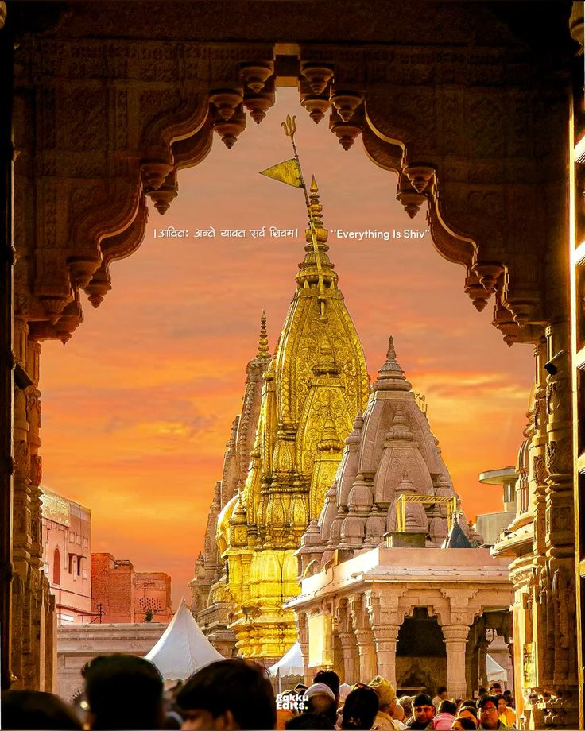
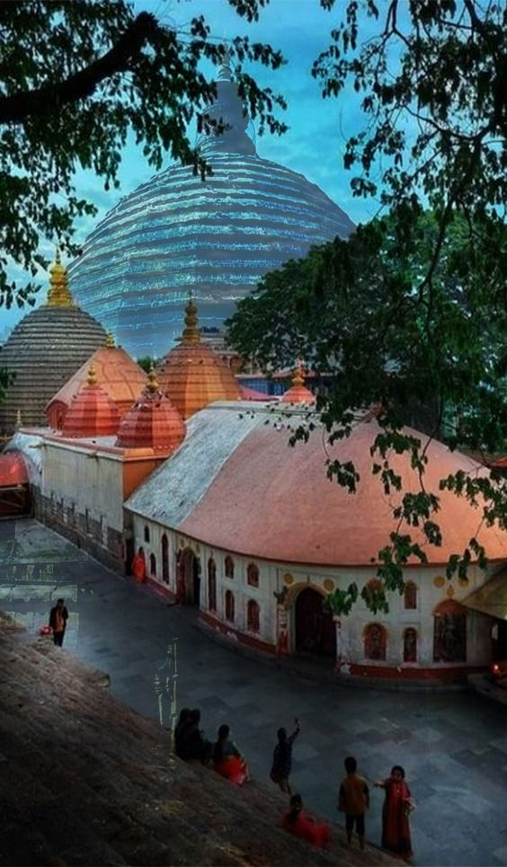
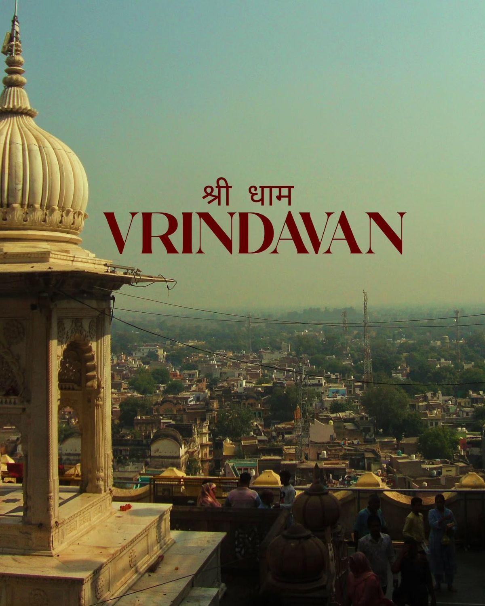
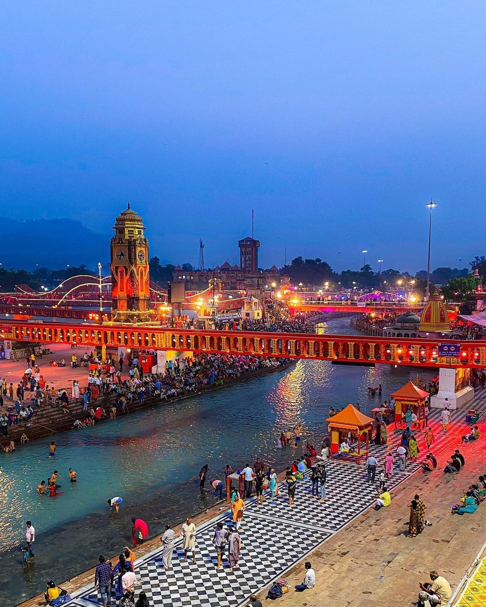

Mahakaleshwar’s city where time dissolves. One of the seven Mokshapuris and a fierce Shaiva-tantric center
🔱 Jyotirlinga City🕉️ Tantric Hub

Varanasi
🔱10+ Verified Temples
(Verified from scriptures & regional texts)
Revered in the Vedas and Agamas, Kashi is not merely a city — it is a cosmic tirtha where
Mahadev
himself grants liberation.
From Vishwanath Jyotirlinga to Kaal Bhairava’s vigilant presence, every street echoes with
spiritual
resonance.
🔱 Jyotirlinga City🕉️ Tantric Hub🔥 Agni Kshetra

Kamakhya
🔱10+ Verified Temples
(Verified from scriptures & regional texts)
Atop Nilachal hill, Kamakhya is the living goddess of Tantra — where Devi’s creative power flows
without interruption.
🕉️ Tantric Hub🔥 Agni Kshetra

Vrindavan
🔱10+ Verified Temples
(Verified from scriptures & regional texts)
The forest of Vrinda Devi, Vrindavan is the eternal playground of Shri Krishna’s rasalila —
filled with temples that echo Radha-Krishna bhava and divine love.
🔱 Radha-Krishna🕉️ Bhakti Ras🔥 Vaishnava Peeth

Haridwar
🔱10+ Verified Temples
(Verified from scriptures & regional texts)
One of the Sapta Moksha Puris, Haridwar is where the Ganga descends from heaven. Its ghats,
especially Har Ki Pauri, witness daily divine aarti and karmic cleansing.